You approved hero B. This page shows everything else: two complete pages you can scroll, what changed from the version you rejected, and what the evidence says so far.
Hero B: approvedStory, words, type, layout, motion: proposedNothing is live
Both pages are real, running builds with the motion on. Resize the window to see the 320 to 2560px layouts. Add ?static to a page's address to see its finished state with no motion.
Where it stands
Working recommendation: page A, not a reader-voted winner. Six fresh isolated readers, three per page, read the frozen pages at 00:37Z. All six understood that zero does the work after you start a run, and all six found the Undo tab and both ways to put mail back. Visuals improved (A 3/3/2, B 3/3/3, against 2/2/2 before). Job clarity and readiness to decide did not change. Finding the data, safety and cost facts did not improve (A 3/4/3, B 3/3/3, against 4/3/4).
A is 70 words shorter than B and showed no story or decision disadvantage. B's slightly better visual scores count against A and stay on record. All six readers asked for a real price, and all six found it too easy to confuse "no zero server receives your email" with TypeSafe receiving it. Those two points lead the fix batch.
Next: one fix batch covering the readers, the design critique and QA together, then an adversarial review by review-qa, then the final recommendation here.
These are AI model readers working from stills and copy, not people and not live motion. Full analysis: slices/01-copy-and-story/proof/rethink/after-findings.md. review-qa pending
The story: six blocks became four or five
Old readers all understood the product, but said the page taught the same keep-or-archive lesson twice, and that the Undo window proved nothing. Both new outlines cut the second demo and replace the grey placeholder rows with a readable Undo window.
Before (rejected)
A: recovery first
B: risk first
Hero B
Hero B
Hero B
See what stays. See what gets archived.
See what went into the archive. How it runs, the rules, and the Undo tab, in one section
Before you install. The five facts first
Keep mail that needs your reply or action.
Before you install. The five facts
Choose what needs to stay. The real Rules text
Undo an archive. Nothing is deleted.
Install when you’re ready.
Restore archived mail.
Know what you connect, share and pay for.
Ready to install?
Install zero on your Mac.
Words: over 900 on the live site, 532 in the rejected version with hero B, A 474, B 544. Every disclosure is still there, said once. Line-by-line old and new copy is in the copywriter's slices/01-copy-and-story/proof/rethink/PROPOSAL.md.
Before and after, whole page
Desktop, 1440px wide. Scroll inside each frame. The mobile captures (390px) follow below.
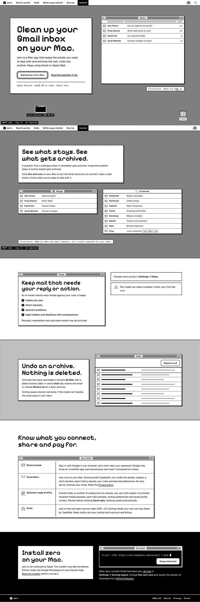
Before: rejected v3, six sections
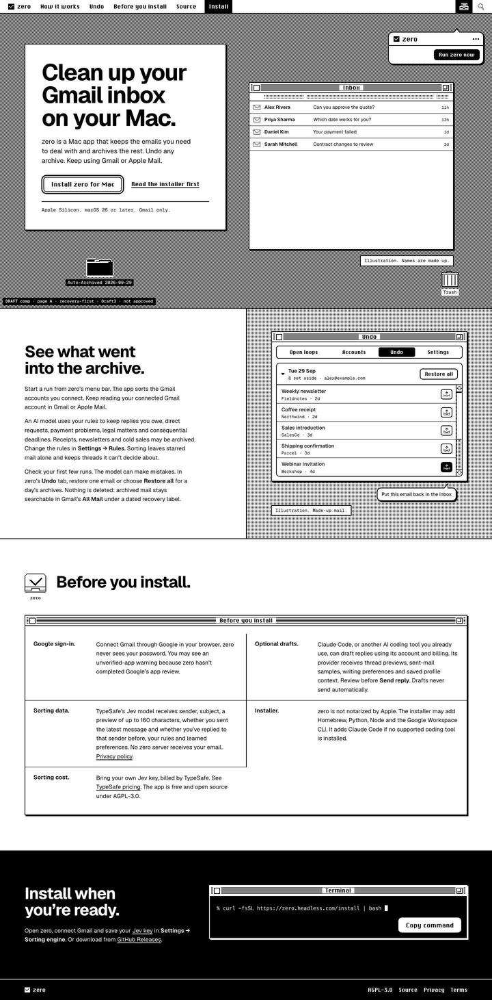
A: four sections
B: five sections
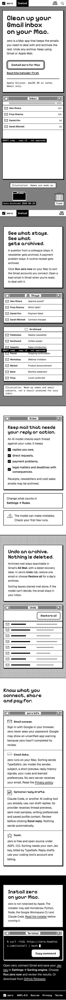
Before, 390px
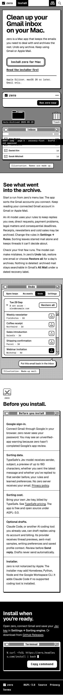
A, 390px
B, 390px
More captures, including 320 and 1920px, no JavaScript and reduced motion: page-a/shots, page-b/shots.
Headings you can read
You said the heading font was too hard to read. We set four options on the real headlines at 320, 390, 1440 and 1920px. An OCR test read the old Pixelify headings correctly 30 to 35% of the time on phones. The proposed option T3 scored 93%.
T3: Geist Bold for every heading. The Chicago-style pixel face stays only on short labels (menu bar, window titles, tabs and buttons), where it's crisp and carries the Mac feel.
OCR stands in for reading, not proof of it. Readers, and you, are the real test. All four options: type specimen.
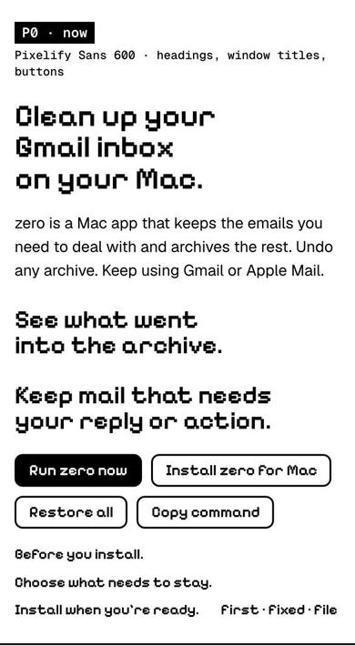
Before: Pixelify, 390px
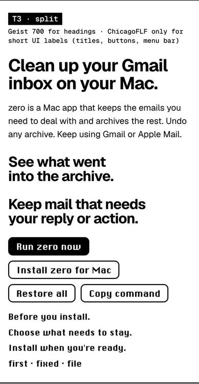
After: T3, 390px
Edge to edge
Every section now runs the full width of the window. Below 1100px it's one column: the words, then zero's window on a dithered desktop that runs to both edges. From 1100px the words sit beside the window (5 to 7 columns), and from 1920px they split 4 to 8. Nothing scrolls sideways at any width from 320 to 2560px.
Width
Layout
Line length (characters)
320
one column
34
390
one column
43
768
one column
85 too long, fix queued
1440
words beside window, 5 | 7
60–64
1920
4 | 8, text 18px
60–63
2560
4 | 8
85 too long, fix queued
Line lengths were measured from the real rendered lines, with a median per width. The target is 60 to 75. Spec: proof/LAYOUT-GRID.md.
One stepped beat per section
Each section's window acts out its one point, in the same 1-bit, frame-by-frame way as the hero. A section plays once when you scroll to it. If you jump straight to a section, or it's already on screen, it just shows the finished state. With reduced motion or no JavaScript you get the finished state, and nothing is only visible in the motion.
Undo: the batch opens, then the put-back button explains itself
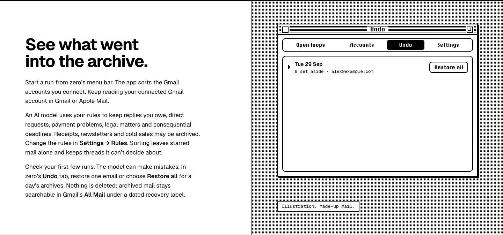
1 · collapsed2 · rows step in
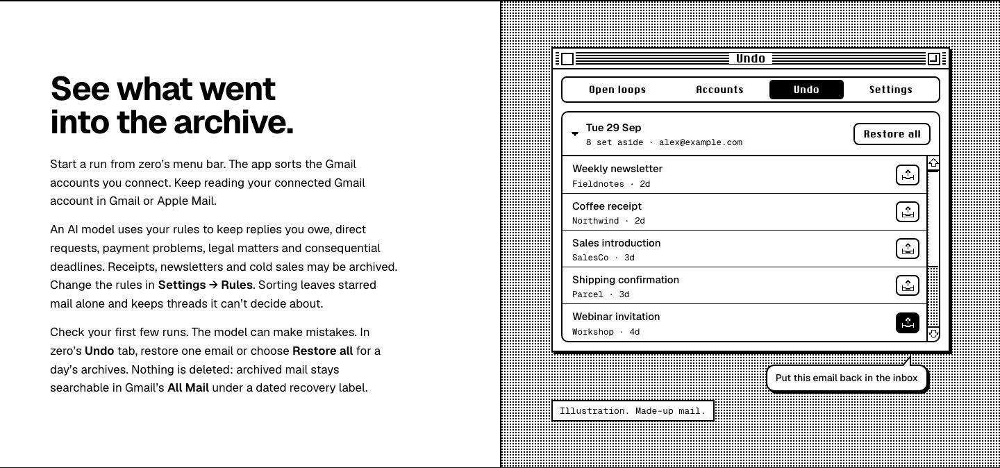
3 · balloon (final)
Rules (B only): the tab moves to Settings, then the policy fills in
1 · Open loops2 · to Settings3 · Rules (final)
Before you install: Get Info opens from the zero icon
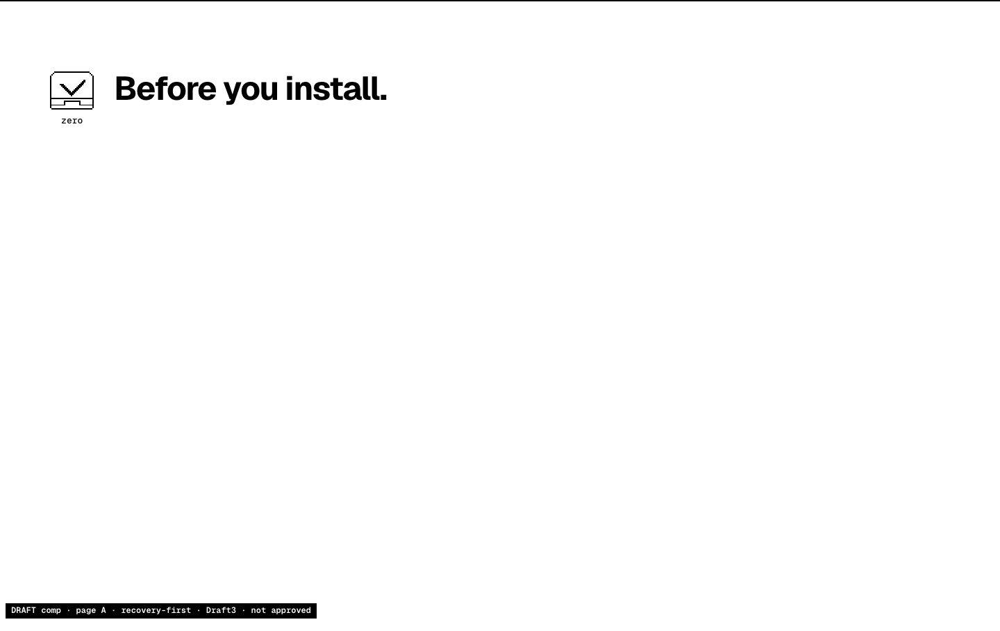
1 · icon
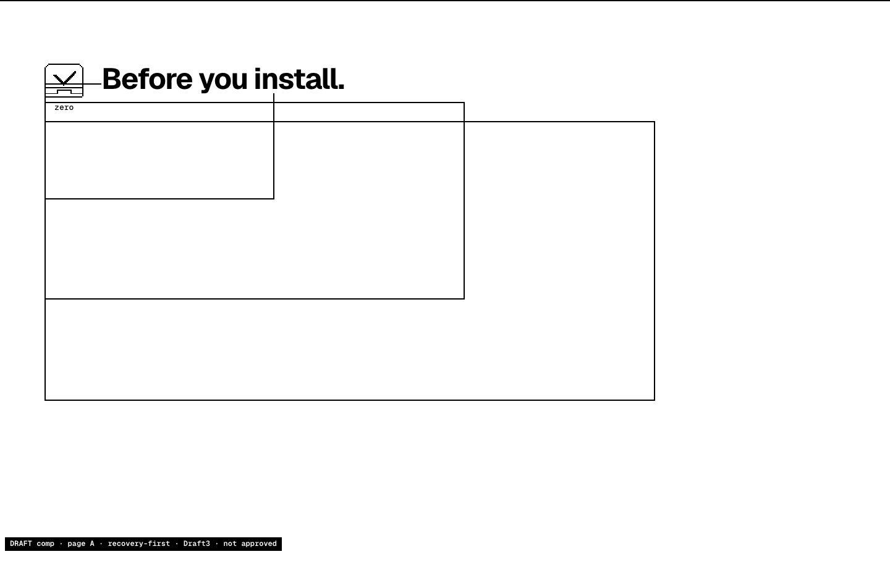
2 · zoom
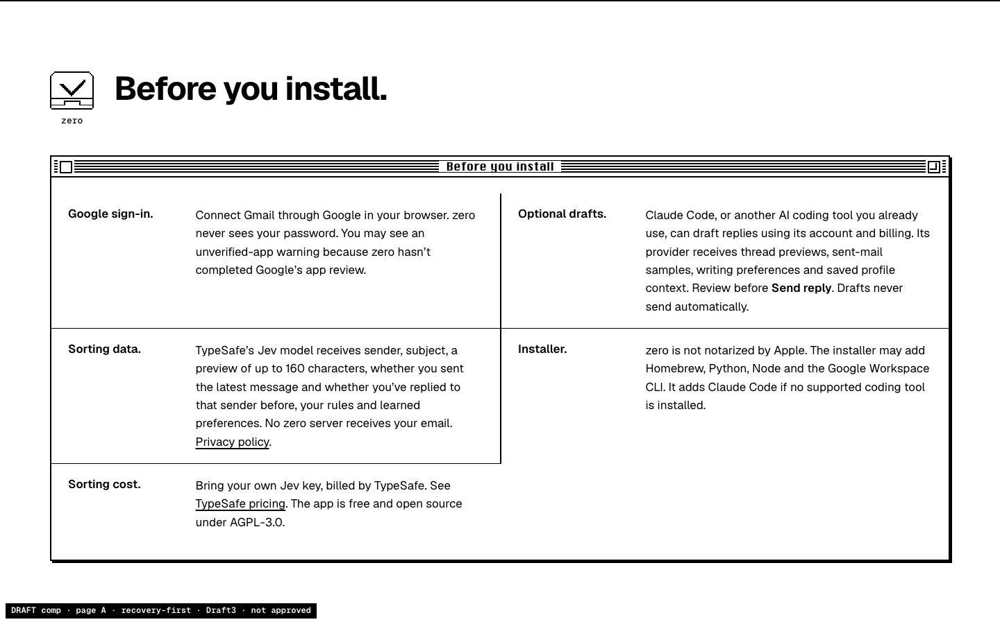
3 · the five facts (final)
Install: the command types itself
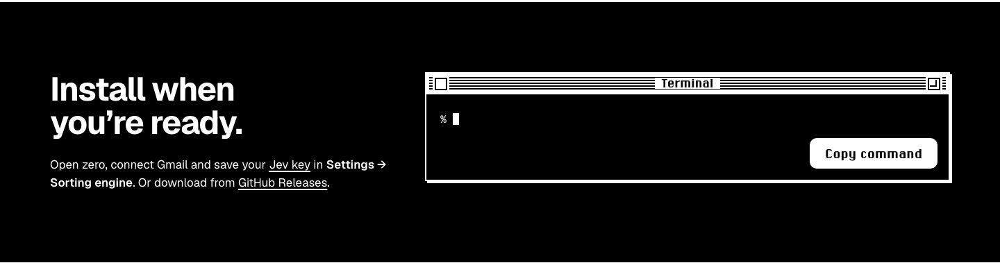
1 · prompt2 · command (final)
The section beats cause zero layout shift, measured in Chromium. Spec: proof/MOTION-SPEC.md §4.0.
Each section shows its point
Section
Before
After
Sort demo
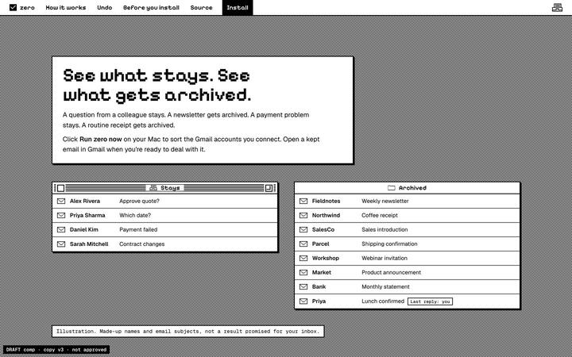
Stays and Archived, which repeated the hero
Cut. The hero already shows the sort.
Rules
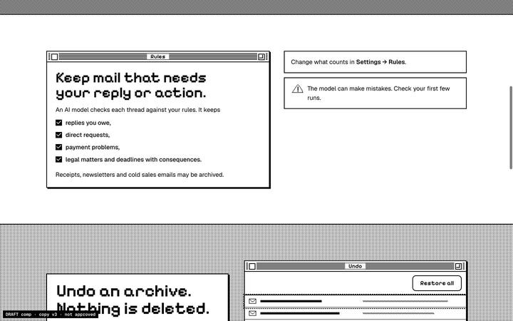
A summary card
A: one paragraph beside Undo. B: zero's real Settings, Rules pane, with the actual default policy text
Recovery
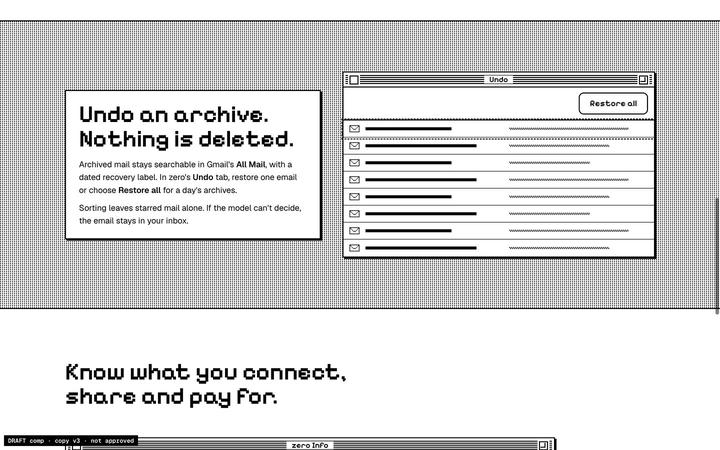
Grey placeholder rows
zero's Undo tab: a dated batch, 5 of 8 readable made-up emails, Restore all, a put-back button and its real tooltip
Tradeoffs
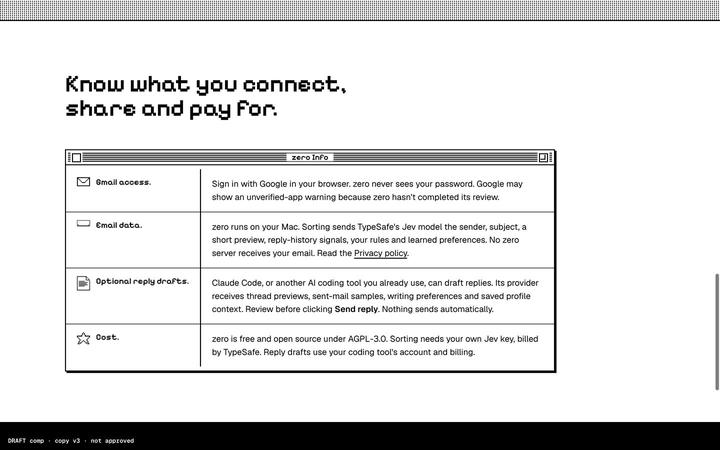
4 long paragraphs; the install warning sat elsewhere
Get Info from the zero icon: 5 short labelled facts, including the installer warning, all before the command. The hero's Install button lands here.
Install
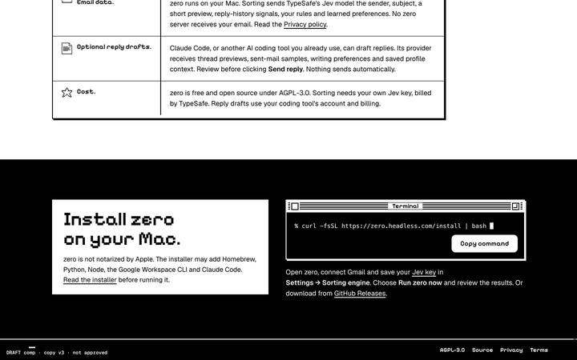
Warnings plus the command
Only the next step: the command, Copy command, and the first setup step
Evidence and its limits
Check
Result
Automated acceptance, 6 widths
Chromium 117/0, WebKit 113/0, rerun independently by the copywriter. No sideways scroll, text stays inside its section, the words match the counted copy exactly, the no-JS and reduced-motion states equal the finished page, and keyboard focus only reaches real links and Copy command
Fresh readers, 3 per page
Done, summarised above. Mixed: visuals up, story up for one A reader, finding tradeoffs not improved. One B reader missed the Undo scrollbar, so the 5-of-8 rows need a clearer cue. after-findings.md
Design critique (/impeccable)
5 fixes queued: empty space beside short text, a gap in the facts window, line length, Rules text wrapping, and A's longest section. proof/IMPECCABLE-CRITIQUE-pages.md
Adversarial review (review-qa)
pending, after the fix batch
Not verified
Real Safari 26 and real iPhones or Macs. The "WebKit" results come from Playwright's build, and the readers are AI models, not people.
What we'll ask you to decide
A or B, or neither, once the fixes and the adversarial review are in.
Heading type T3 (Geist Bold headings, pixel face only on labels).
The four section beats, before development builds them for real.
Nothing goes live from this page. Answers go through main-lead.